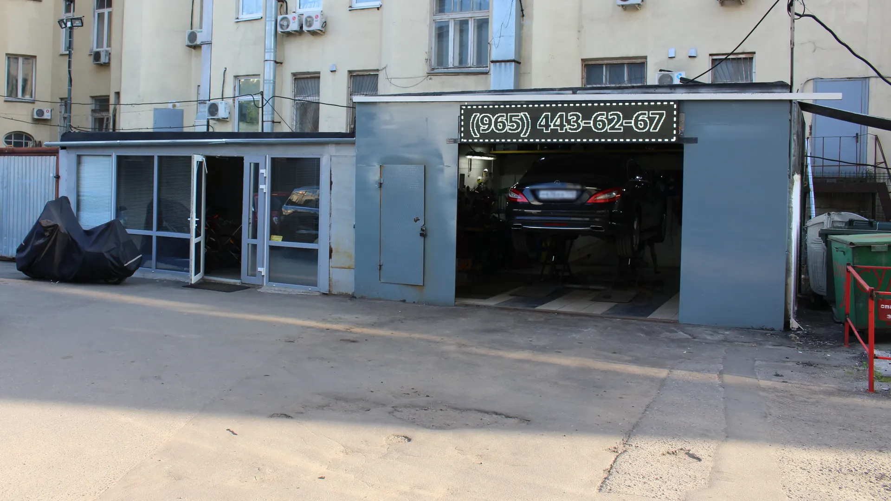
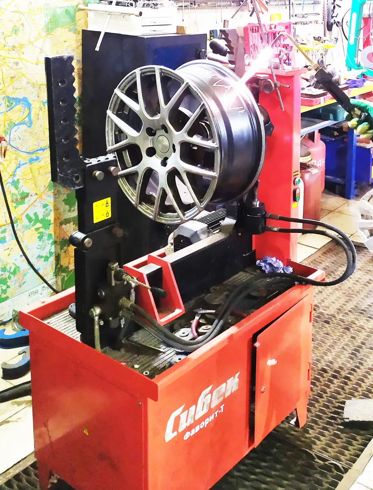
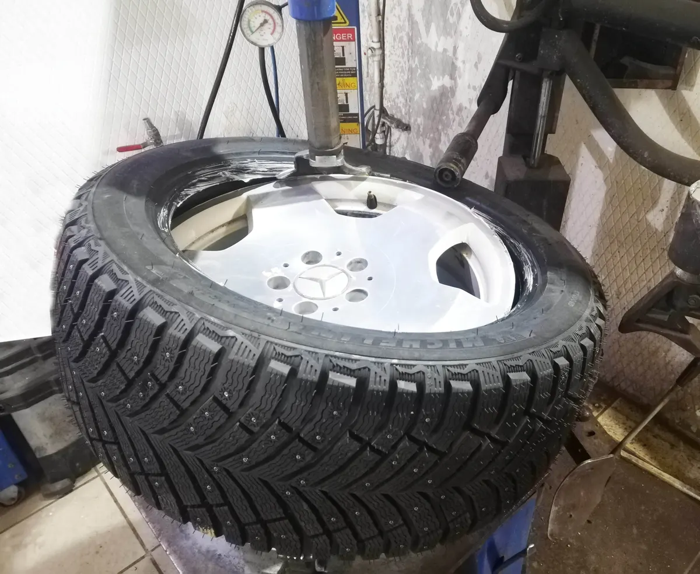

Шиномонтаж · метро Полянка
Шиномонтаж на Большой Полянке в Москве – по записи, без очереди
Двор дома 42/2, стр. 8, метро Полянка. Переобуваем, чиним проколы и боковые порезы, правим литые диски, настраиваем датчики давления.
- Пн–сб 09:00–19:00, вс – выходной
- Запись в WhatsApp и по телефону
- Оплата картой или наличными

Цены
Сумму под ваш радиус и машину назовём при записи.
Шиномонтаж
- Шиномонтаж, 1 колесокомплексный, цена для R15999 ₽
- Замена шин «под ключ»2 000 ₽
- Балансировка колеса300 ₽
- Выездной шиномонтаж1 500 ₽
Ремонт шин и дисков
- Ремонт прокола500 ₽
- Ремонт бокового порезагорячая или холодная вулканизация1 500 ₽
- Ремонт литого диска1 500 ₽
- Чистка бортов диска350 ₽
- Чистка посадочного места200 ₽
Датчики и хранение
- Датчики давления TPMSустановка, обучение, клонирование1 000 ₽
- Хранение шин или колёс6 месяцевот 6 000 ₽
Как проходит
- 01
Пишете в WhatsApp или звоните
Называете радиус и удобное время. Пост у нас один, поэтому работаем по записи.
- 02
Заезжаете во двор
Большая Полянка, 42/2, стр. 8. Серая постройка с воротами и вывеской «Автосервис Шиномонтаж».
- 03
Мастер занимается машиной
Снимаем колёса, меняем шины, балансируем, ставим на место и протягиваем крепёж.
- 04
Забираете машину
Оплатить можно картой, наличными или переводом.



За чем к нам едут
Переобуться в центре без очереди
Принимаем по записи: приезжаете к своему времени.
Починить колесо или диск
Проколы, боковые порезы, ремонт литых дисков.
Настроить датчики давления
Ставим, обучаем и клонируем датчики TPMS на второй комплект колёс.
Отзывы с Яндекс.Карт
«Записалась по времени, приехала, вовремя приступили к работе, поменяли резину по хорошей цене. Отзывчивые ребята. Рядом есть кафе, где можно подождать. Предупредили, что хорошо бы сменить резину.»
Гелена Хохлова · 30 июля 2025
«Хороший шиномонтаж, классные специалисты и очень удобное и нужное расположение. В центре Москвы, где очень мало необходимого сервиса.»
Dmitriy S. · 28 мая 2026
«Отличный сервис, с прекрасными людьми! Очень помогли, когда я пробил колесо. Сделали все недорого, быстро, и очень приветливо! Большое спасибо!🤝»
Александр Шульц · 25 июля 2025
Отзывы с карточки на Яндекс.Картах, без правок.
Частые вопросы
Как вас найти?
Улица Большая Полянка, 42/2, стр. 8, метро Полянка. Мы во дворе: серая постройка с воротами и вывеской «Автосервис Шиномонтаж». Как заехать, подскажем при записи.
Нужно ли записываться?
Да, лучше заранее: пост у нас один. Напишите в WhatsApp или позвоните.
Делаете выездной шиномонтаж?
Да, мобильный шиномонтаж приезжает к вам. Выезд – 1 500 ₽.
Работаете с датчиками давления?
Да: устанавливаем, обучаем, заменяем и клонируем датчики TPMS. Цена – 1 000 ₽.
Можно оставить шины на хранение?
Да, на 6 месяцев, от 6 000 ₽. Цена одна за шины и за колёса в сборе.
Запишитесь на удобное время
- Адрес
- Большая Полянка, 42/2, стр. 8, Москва
- Часы
- Пн–сб 09:00–19:00, вс – выходной
- Телефон
- +7 (495) 644-52-30